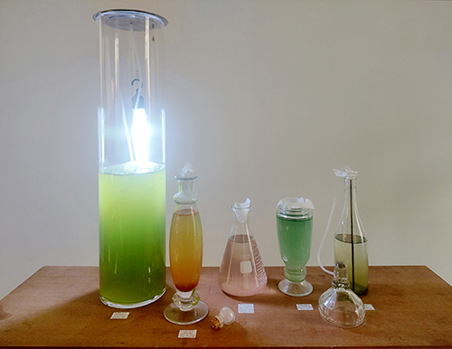
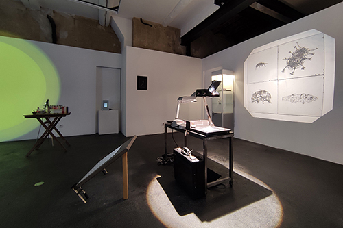
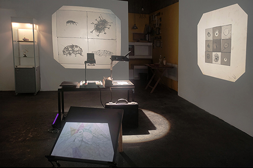
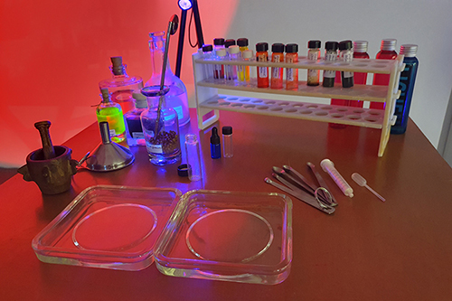
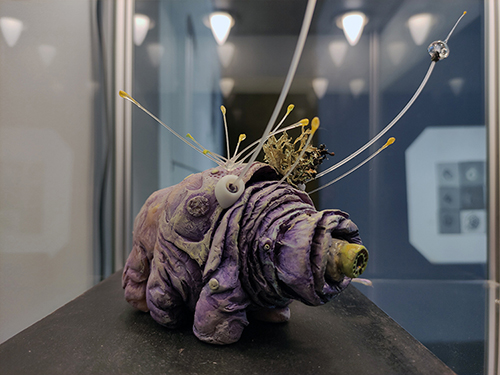
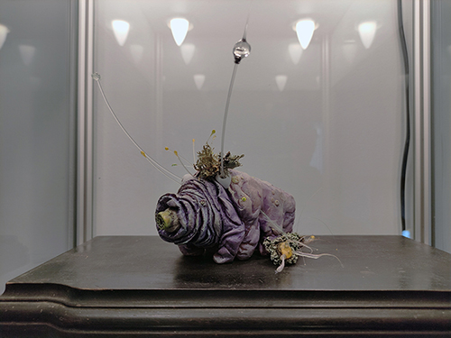
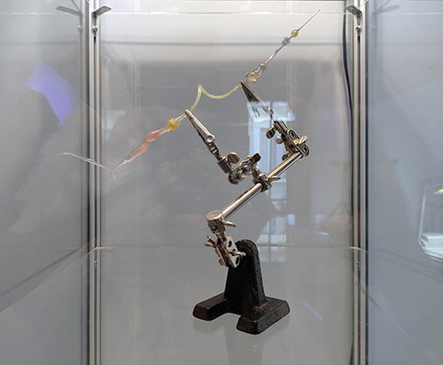

Vue d'exposition Intra-Muros, la vie invisible des sols, du collectif LAAB, Le Lieu multiple à Montpellier, 2023.
Intra-Muros, la vie invisible des sols.
Résidence de recherche et de création
Le sol, ses habitants pour un temps deviennent notre horizon. Si appartenir à la Terre, être terrien est bien souvent associé à l'attachement ou à la pesanteur, nous souhaitons l'approcher de manière volatile, transparente et diffuse à l'instar de sa faune intraterrestre qui constelle la surface et oxygène nos pas. Prendre en compte ces formes de vie permet de reconsidérer notre place dans l’environnement. Ainsi, les liens arts-sciences qui seront explorés dans le cadre de cette résidence de recherche invitent à déplacer notre regard du visible à l’invisible pour nous sensibiliser aux enjeux qui ont trait aux sols et à la diversité de ses habitants. Cette sensibilisation passera par le sensible et prendra différentes configurations selon les sens invoqués, comme la vue ou l’odorat.

Culture de pigment, installation avec photobioréacteur et microalgues, Sabrina Issa pour le LAAB, Le Lieu multiple, Montpellier, 2023.

Vue d'exposition Intra-Muros, la vie invisible des sols, du collectif LAAB, sur la gauche Spectre d’absorption des microorganismes, installation lumineuse, 5’12 secondes, François-David Collin et Sabrina Issa, sur la droite Transparure, installation, rétroprojecteurs, plaques de verre de 12x12 cm, plexiglass, vernis UV, et au centre, Compte paysagé, dessins sur papier carbone, (21x14,5 cm), vidéo 5’38 secondes, Nicolas Bralet, pour le LAAB, Le Lieu Multiples, 2023.

Au premier plan,Compte paysagé, dessins sur papier carbone, (21x14,5 cm), vidéo 5’38 secondes, ainsi queTransparure, installation, rétroprojecteurs, plaques de verre de 12x12 cm, plexiglass, vernis UV, Nicolas Bralet, pour le LAAB, Le Lieu Multiples, 2023.

Pigments sublimés, composants colorés susceptibles de perdre leur couleur au profit d’une odeur (carotène, chlorophylle, enzyme de soja..), Sabrina Issa, pour le LAAB, Le Lieu multiple à Montpellier, 2023.

Tardigrade cosmique, sculpture, modelage en pâte polymère peinte, lichen, poils de chevreuil, plumes, fluorocarbone, vernis UV, pigments, Nicolas Bralet, pour le LAAB, Le Lieu Multiple, Montpellier, 2023

Tardigrade cosmique, sculpture, modelage en pâte polymère peinte, lichen, poils de chevreuil, plumes, fluorocarbone, vernis UV, pigments, Nicolas Bralet, pour le LAAB, Le Lieu Multiple, Montpellier, 2023

Alambic organique, sculpture, vernis UV, perles et nylon, Nicolas Bralet, pour le LAAB, Le Lieu Multiple, Montpellier, 2023.